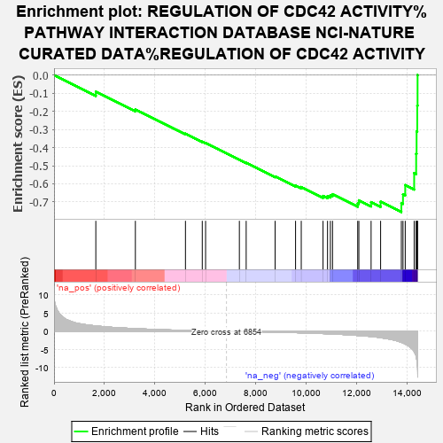
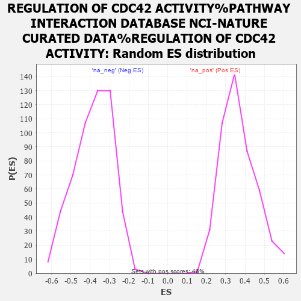

| | | Dataset | MBD2KO_pre.rnk |
| Phenotype | NoPhenotypeAvailable |
| Upregulated in class | na_neg |
| GeneSet | REGULATION OF CDC42 ACTIVITY%PATHWAY INTERACTION DATABASE NCI-NATURE CURATED DATA%REGULATION OF CDC42 ACTIVITY |
| Enrichment Score (ES) | -0.75560945 |
| Normalized Enrichment Score (NES) | -1.9624579 |
| Nominal p-value | 0.0 |
| FDR q-value | 0.025983699 |
| FWER p-Value | 0.084 |
Table: GSEA Results Summary

Fig 1: Enrichment plot: REGULATION OF CDC42 ACTIVITY%PATHWAY INTERACTION DATABASE NCI-NATURE CURATED DATA%REGULATION OF CDC42 ACTIVITY
Profile of the Running ES Score & Positions of GeneSet Members on the Rank Ordered List
| PROBE | GENE SYMBOL | GENE_TITLE | RANK IN GENE LIST | RANK METRIC SCORE | RUNNING ES | CORE ENRICHMENT | | 1 | NME1 | | | 1658 | 1.447 | -0.0917 | No |
| 2 | BCAR3 | | | 3228 | 0.710 | -0.1890 | No |
| 3 | GIT1 | | | 5216 | 0.228 | -0.3232 | No |
| 4 | PLCG1 | | | 5883 | 0.118 | -0.3676 | No |
| 5 | APC | | | 6015 | 0.101 | -0.3750 | No |
| 6 | DOCK6 | | | 7356 | -0.061 | -0.4670 | No |
| 7 | ITSN1 | | | 7626 | -0.095 | -0.4842 | No |
| 8 | RACGAP1 | | | 8775 | -0.264 | -0.5596 | No |
| 9 | ARHGEF7 | | | 9586 | -0.402 | -0.6093 | No |
| 10 | FGD1 | | | 9812 | -0.449 | -0.6176 | No |
| 11 | ARHGEF9 | | | 10677 | -0.656 | -0.6670 | No |
| 12 | ARHGDIA | | | 10855 | -0.704 | -0.6679 | No |
| 13 | ARHGAP1 | | | 10968 | -0.735 | -0.6638 | No |
| 14 | ARHGAP17 | | | 11053 | -0.768 | -0.6572 | No |
| 15 | CDC42 | | | 12053 | -1.173 | -0.7075 | Yes |
| 16 | SPATA13 | | | 12099 | -1.199 | -0.6912 | Yes |
| 17 | FARP2 | | | 12584 | -1.468 | -0.7011 | Yes |
| 18 | ITSN2 | | | 12962 | -1.773 | -0.6986 | Yes |
| 19 | DOCK11 | | | 13785 | -3.061 | -0.7061 | Yes |
| 20 | VAV2 | | | 13850 | -3.236 | -0.6582 | Yes |
| 21 | DOCK9 | | | 13939 | -3.532 | -0.6072 | Yes |
| 22 | ARHGEF6 | | | 14294 | -5.646 | -0.5404 | Yes |
| 23 | RALBP1 | | | 14373 | -6.930 | -0.4338 | Yes |
| 24 | VAV3 | | | 14390 | -7.658 | -0.3110 | Yes |
| 25 | DOCK10 | | | 14417 | -8.929 | -0.1684 | Yes |
| 26 | MCF2 | | | 14429 | -10.489 | 0.0004 | Yes |
Table: GSEA details [plain text format]

Fig 2: REGULATION OF CDC42 ACTIVITY%PATHWAY INTERACTION DATABASE NCI-NATURE CURATED DATA%REGULATION OF CDC42 ACTIVITY: Random ES distribution
Gene set null distribution of ES for REGULATION OF CDC42 ACTIVITY%PATHWAY INTERACTION DATABASE NCI-NATURE CURATED DATA%REGULATION OF CDC42 ACTIVITY